#libraries
library(tidyverse)
library(sf)
library(ggplot2)
library(readxl)
library(terra)
library(ranger)
library(viridis)
library(janitor)
library(randomForest)
library(purrr)
library(reshape2)
library(leaflet)
library(scales)
library(htmltools)
library(vegan)SSWEEP_proj_02_16_2026
Load libraries
Load data
#load data:
#new weed ID data (xlsx)
weed_id_tax <- read_excel("../data/SSWEEP_data_with_tax_and_indices_02_2026.xlsx", sheet = "SSWEEP")
#indices:
weed_idx <- read_excel("../data/SSWEEP_data_with_tax_and_indices_02_2026.xlsx", sheet = "Calculations for each grid")
#Weed ID data (xlsx):
weed_id <- read_csv("../data/SSWEEP_weed_id_count_data.csv")
#keep Total sheet but discard other sheets:
#surface sampling (15cm) (.csv):
surface_sampling <- read_csv("../data/SSWEEP_surface_SP_samples.csv")
#full profile samples:
# full_profile <- read_csv("../data/SSWEEP_full_profile_samples.csv")
#covariate stack (.tfs):
# cov_stack <- rast("../data/covariate_stack_3m.tif")Data wrangling: join weed ID data to surface sampling points
#clean weed_id_tax:
weed_id_tax <- weed_id_tax %>%
select(1:143) %>%
#select rows 1:72:
slice(1:72)
#weed id columns are rows under surface sampling row_num column:
#pivot all columns of weed id:
weed_id_long <- weed_id_tax %>%
pivot_longer( cols = -c("Common Name","Genus","Species","Family","Life Cycle","Season","Type"),
names_to = "row_num",
values_to = "weed_count") %>%
#rename ...1 to weed_species
rename(weed_species = "Common Name")
#join row_num
surface_sampling_weed <- surface_sampling %>%
left_join(weed_id_long, by = "row_num") %>%
clean_names()
head(surface_sampling_weed)# A tibble: 6 × 21
pedology_lab_id row_num x y lbc lbc_eq p_h_2 ca k mg mn
<dbl> <chr> <dbl> <dbl> <dbl> <dbl> <dbl> <dbl> <dbl> <dbl> <dbl>
1 240400 1A -83.7 32.4 189 506 6.55 661 64.3 74.8 17.5
2 240400 1A -83.7 32.4 189 506 6.55 661 64.3 74.8 17.5
3 240400 1A -83.7 32.4 189 506 6.55 661 64.3 74.8 17.5
4 240400 1A -83.7 32.4 189 506 6.55 661 64.3 74.8 17.5
5 240400 1A -83.7 32.4 189 506 6.55 661 64.3 74.8 17.5
6 240400 1A -83.7 32.4 189 506 6.55 661 64.3 74.8 17.5
# ℹ 10 more variables: p <dbl>, zn <dbl>, weed_species <chr>, genus <chr>,
# species <chr>, family <chr>, life_cycle <chr>, season <chr>, type <chr>,
# weed_count <chr>Build training table for RF soil-property rasters
Based on surface samples, using covariates extracted at soil sampling points.
#questions:
#can any soil properties predict weed species presence/abundance or diversity indices?
#what topographic covariates are most predictive of weed species?
#are there particular soil nutrients that are associated with particular weed species or diversity indices or weed taxa?
#are there particular disturbance covariates that are associated with particular weed species or diversity indices or weed taxa?
#are there particular full profile summaries (e.g. root depth) that are associated with particular weed species
#or diversity indices or weed taxa?
#plan: pull in disturbance covariate rasters and potentially create rasters such as distance to roads
#pull in other covariates
#potentially pull in full profile data (such as root depth data) to use as predictors in RF soil-property rasters (but only if we have enough points with root depth data to make it worthwhile)
#merge with soil nutrients
#correlation matrix between taxa, nutrients
#correlation matrix between disturbance covariates and weed species and indices
#correlation matrix between full profile summaries and weed species/indicies/nutrients
# Disturbance raster (UTM 17N)
current_dist <- rast("../data/disturbance/currently_dist_binary.tif")
# Recode categorical -> binary (you already did this)
lev <- levels(current_dist)[[1]]
id_col <- names(lev)[1]
yes_id <- lev[[id_col]][lev$CurrentDis == "Yes"]
current_dist_bin <- ifel(current_dist == yes_id, 1, 0)
names(current_dist_bin) <- "dist_current"
# OPTIONAL: distance-to-disturbance raster (meters)
# (distance from each cell to nearest disturbed cell)
dist_to_dist <- distance(current_dist_bin, value = 1)
names(dist_to_dist) <- "dist_to_current_m"
# --- disturbance rasters already made ---
# current_dist_bin (0/1) and dist_to_dist (meters)
# points in raster CRS
soil_pts_ll <- surface_sampling %>%
select(row_num, x, y, lbc, lbc_eq, p_h_2, ca, k, mg, mn, p, zn) %>%
st_as_sf(coords = c("x","y"), crs = 4326)
soil_pts_utm <- st_transform(soil_pts_ll, crs(current_dist_bin))
# extract disturbance values
dist_vals <- terra::extract(current_dist_bin, vect(soil_pts_utm)) %>% select(-ID)
dist_dvals <- terra::extract(dist_to_dist, vect(soil_pts_utm)) %>% select(-ID)
soil_dist <- soil_pts_utm %>%
st_drop_geometry() %>%
bind_cols(dist_vals, dist_dvals) %>%
clean_names()
# current_dist_bin is 0/1
# make a target raster: 1 where disturbed, NA elsewhere
target <- ifel(current_dist_bin == 1, 1, NA)
# distance to nearest target cell (meters, since UTM)
dist_to_dist <- distance(target)
names(dist_to_dist) <- "dist_to_current_m"
plot(dist_to_dist)
global(dist_to_dist, "range", na.rm=TRUE) min max
dist_to_current_m 0 530.9817dist_dvals <- terra::extract(dist_to_dist, vect(soil_pts_utm)) %>% select(-ID)
soil_dist <- soil_pts_utm %>%
st_drop_geometry() %>%
bind_cols(dist_vals, dist_dvals) %>%
janitor::clean_names()weed_long <- surface_sampling_weed %>%
transmute(
row_num = as.character(row_num),
family = str_squish(family),
weed_count = as.numeric(weed_count)
) %>%
filter(!is.na(weed_count))
taxa_point <- weed_long %>%
group_by(row_num) %>%
summarise(
weed_total_abundance = sum(weed_count, na.rm=TRUE),
weed_species_richness = sum(weed_count > 0, na.rm=TRUE),
weed_family_richness = n_distinct(family[weed_count > 0]),
.groups="drop"
)
dom_family <- weed_long %>%
group_by(row_num, family) %>%
summarise(fam_abund = sum(weed_count, na.rm=TRUE), .groups="drop") %>%
group_by(row_num) %>%
slice_max(fam_abund, n=1, with_ties=FALSE) %>%
ungroup() %>%
left_join(taxa_point, by="row_num") %>%
mutate(dom_family_share = fam_abund / pmax(weed_total_abundance, 1)) %>%
select(row_num, dom_family = family, dom_family_abund = fam_abund, dom_family_share,
weed_total_abundance, weed_species_richness, weed_family_richness)
dat_fast <- soil_dist %>%
mutate(row_num = as.character(row_num)) %>%
left_join(dom_family, by="row_num")
glimpse(dat_fast)Rows: 136
Columns: 18
$ row_num <chr> "1A", "2A", "3A", "4A", "5A", "6A", "7A", "8A", …
$ lbc <dbl> 189, 202, 242, 156, 149, 196, 164, 128, 148, 233…
$ lbc_eq <dbl> 506, 553, 700, 384, 359, 531, 414, 282, 355, 667…
$ p_h_2 <dbl> 6.55, 5.98, 6.21, 6.18, 5.90, 6.03, 5.62, 5.84, …
$ ca <dbl> 661, 655, 635, 623, 413, 441, 408, 345, 313, 544…
$ k <dbl> 64.3, 76.3, 97.7, 63.3, 63.2, 48.9, 37.2, 53.2, …
$ mg <dbl> 74.8, 76.6, 79.8, 55.1, 53.1, 56.9, 38.5, 61.4, …
$ mn <dbl> 17.50, 19.04, 24.25, 17.86, 14.47, 15.20, 21.60,…
$ p <dbl> 45.86, 80.68, 24.61, 15.66, 31.22, 27.72, 16.66,…
$ zn <dbl> 6.75, 26.25, 1.53, 1.89, 1.28, 1.20, 2.43, 1.38,…
$ dist_current <dbl> 0, 0, 0, 0, 0, 0, 0, 0, 1, 1, 1, 0, 0, 0, 0, 0, …
$ dist_to_current_m <dbl> 12.395006, 34.086266, 94.244843, 164.087585, 158…
$ dom_family <chr> "Fabaceae", "Onagraceae", "Caryophyllaceae", "On…
$ dom_family_abund <dbl> 14, 7, 17, 19, 9, 10, 8, 5, 23, 8, 27, 27, 12, 9…
$ dom_family_share <dbl> 0.2857143, 0.3333333, 0.3090909, 0.2794118, 0.42…
$ weed_total_abundance <dbl> 49, 21, 55, 68, 21, 23, 16, 22, 45, 18, 31, 42, …
$ weed_species_richness <int> 9, 6, 10, 14, 9, 8, 8, 12, 7, 6, 4, 7, 7, 5, 4, …
$ weed_family_richness <int> 9, 6, 9, 11, 8, 7, 7, 9, 7, 5, 4, 7, 6, 4, 4, 8,…soil_vars <- c("lbc","lbc_eq","p_h_2","ca","k","mg","mn","p","zn")
dat_fast %>%
pivot_longer(all_of(soil_vars), names_to="soil_var", values_to="value") %>%
ggplot(aes(x = factor(dist_current), y = value)) +
geom_boxplot(outlier.alpha = 0.3) +
geom_jitter(width = 0.15, alpha = 0.3) +
facet_wrap(~ soil_var, scales = "free_y") +
labs(x = "Currently disturbed (0/1)", y = "Soil value") +
theme_minimal()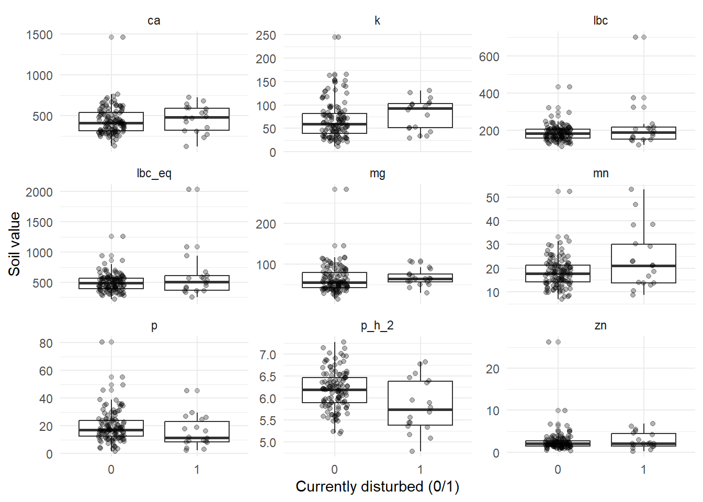
dat_fast %>%
pivot_longer(all_of(soil_vars), names_to="soil_var", values_to="value") %>%
ggplot(aes(x = dist_to_current_m, y = value)) +
geom_point(alpha = 0.35) +
geom_smooth(method = "loess", se = FALSE) +
facet_wrap(~ soil_var, scales = "free_y") +
labs(x = "Distance to current disturbance (m)", y = "Soil value") +
theme_minimal()`geom_smooth()` using formula = 'y ~ x'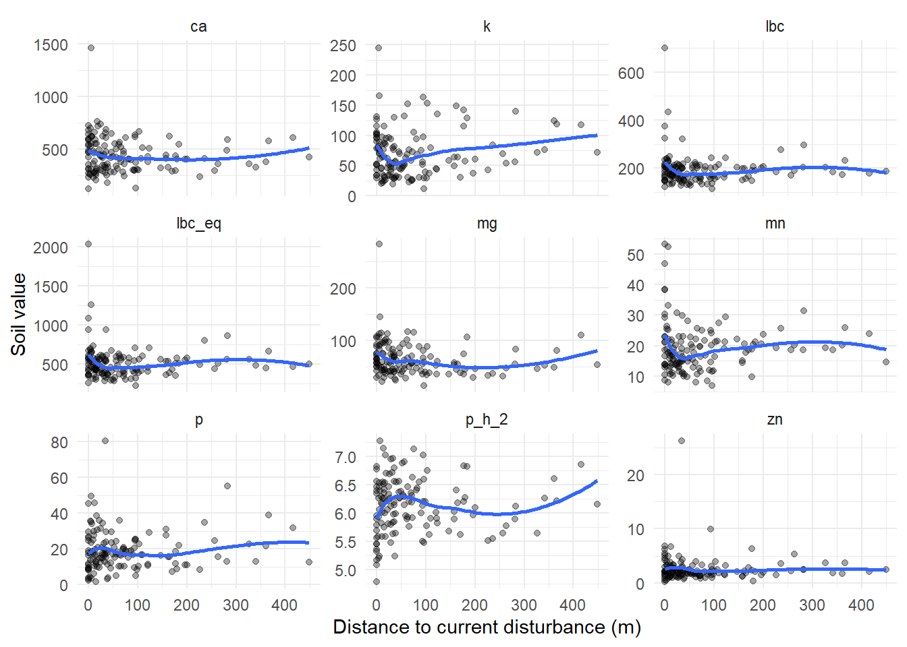
taxa_vars <- c("weed_total_abundance","weed_species_richness","weed_family_richness","dom_family_share")
dat_fast %>%
pivot_longer(all_of(taxa_vars), names_to="taxa_var", values_to="value") %>%
ggplot(aes(x = factor(dist_current), y = value)) +
geom_boxplot(outlier.alpha = 0.3) +
geom_jitter(width = 0.15, alpha = 0.3) +
facet_wrap(~ taxa_var, scales = "free_y") +
labs(x = "Currently disturbed (No = 0/Yes = 1)", y = "Taxa summary") +
theme_minimal()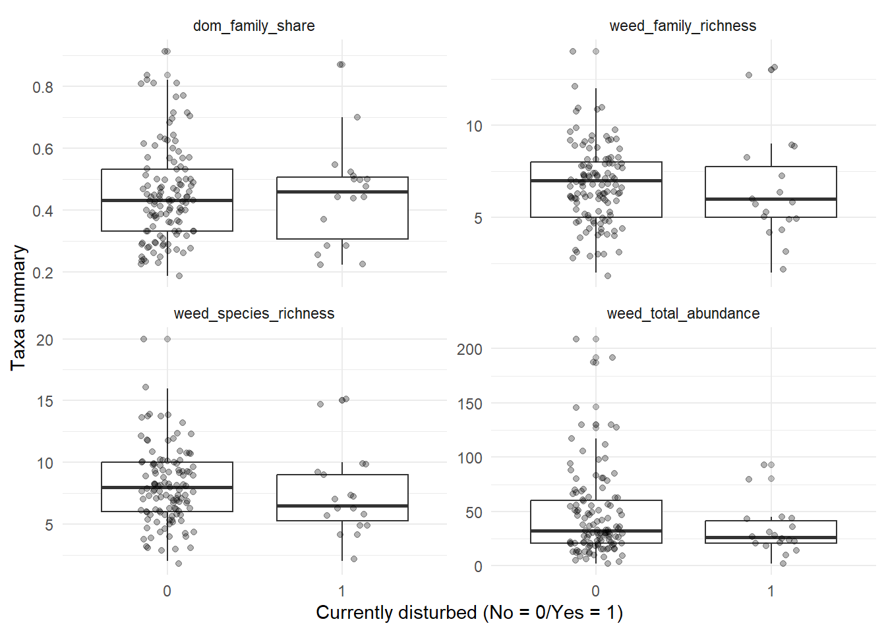
dat_fast %>%
count(dist_current, dom_family) %>%
group_by(dist_current) %>%
mutate(pct = n / sum(n)) %>%
ggplot(aes(x = factor(dist_current), y = pct, fill = dom_family)) +
geom_col() +
scale_y_continuous(labels = scales::percent) +
labs(x = "Currently disturbed (No = 0/Yes = 1)", y = "Proportion of points", fill = "Dominant family") +
theme_minimal()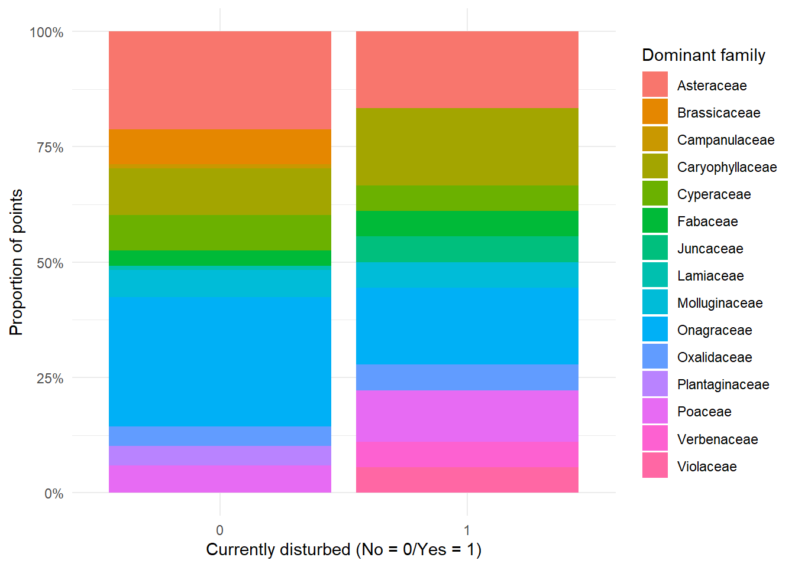
num_mat <- dat_fast %>%
select(dist_current, dist_to_current_m, all_of(soil_vars), all_of(taxa_vars)) %>%
mutate(across(everything(), as.numeric))
cor_small <- cor(num_mat, use="pairwise.complete.obs", method="spearman")
cor_small dist_current dist_to_current_m lbc lbc_eq
dist_current 1.00000000 -0.58766782 0.05223580 0.05223580
dist_to_current_m -0.58766782 1.00000000 -0.05871945 -0.05871945
lbc 0.05223580 -0.05871945 1.00000000 1.00000000
lbc_eq 0.05223580 -0.05871945 1.00000000 1.00000000
p_h_2 -0.20921409 0.06488730 -0.11694709 -0.11694709
ca 0.08456448 -0.09770670 0.50709333 0.50709333
k 0.14618892 0.00010986 0.47783353 0.47783353
mg 0.12573995 -0.24379901 0.32305817 0.32305817
mn 0.13016034 0.05404741 0.53180214 0.53180214
p -0.15088651 0.05448685 0.23839970 0.23839970
zn 0.06908879 -0.04037079 0.29748032 0.29748032
weed_total_abundance -0.11278116 0.07137698 0.11439535 0.11439535
weed_species_richness -0.09869586 0.07219894 0.12881138 0.12881138
weed_family_richness -0.08713766 0.01430570 0.09994580 0.09994580
dom_family_share 0.01105613 0.05228203 0.05944463 0.05944463
p_h_2 ca k mg
dist_current -0.20921409 0.08456448 0.14618892 0.12573995
dist_to_current_m 0.06488730 -0.09770670 0.00010986 -0.24379901
lbc -0.11694709 0.50709333 0.47783353 0.32305817
lbc_eq -0.11694709 0.50709333 0.47783353 0.32305817
p_h_2 1.00000000 0.38715684 0.18132783 0.34466824
ca 0.38715684 1.00000000 0.45856885 0.71417649
k 0.18132783 0.45856885 1.00000000 0.39139028
mg 0.34466824 0.71417649 0.39139028 1.00000000
mn 0.02234118 0.56199123 0.52248006 0.26494765
p 0.30785389 0.54256891 0.29715946 0.37452083
zn 0.09831895 0.43836937 0.42477991 0.16343375
weed_total_abundance 0.10594381 0.14858839 0.24903634 0.10392307
weed_species_richness -0.13075920 0.04893399 0.11440445 -0.02172074
weed_family_richness -0.10687472 0.10564061 0.10969966 0.02008788
dom_family_share 0.09723967 0.01000177 -0.08014630 0.02147541
mn p zn weed_total_abundance
dist_current 0.13016034 -0.150886505 0.06908879 -0.112781164
dist_to_current_m 0.05404741 0.054486851 -0.04037079 0.071376984
lbc 0.53180214 0.238399696 0.29748032 0.114395350
lbc_eq 0.53180214 0.238399696 0.29748032 0.114395350
p_h_2 0.02234118 0.307853888 0.09831895 0.105943808
ca 0.56199123 0.542568913 0.43836937 0.148588388
k 0.52248006 0.297159460 0.42477991 0.249036340
mg 0.26494765 0.374520828 0.16343375 0.103923067
mn 1.00000000 0.338079086 0.40970641 0.279541411
p 0.33807909 1.000000000 0.51269240 -0.002612726
zn 0.40970641 0.512692402 1.00000000 0.227177507
weed_total_abundance 0.27954141 -0.002612726 0.22717751 1.000000000
weed_species_richness 0.17019098 -0.183323852 -0.02049470 0.530626580
weed_family_richness 0.18037696 -0.131966415 -0.04099356 0.482856008
dom_family_share 0.04655188 0.032357156 0.04724605 0.125334113
weed_species_richness weed_family_richness
dist_current -0.09869586 -0.08713766
dist_to_current_m 0.07219894 0.01430570
lbc 0.12881138 0.09994580
lbc_eq 0.12881138 0.09994580
p_h_2 -0.13075920 -0.10687472
ca 0.04893399 0.10564061
k 0.11440445 0.10969966
mg -0.02172074 0.02008788
mn 0.17019098 0.18037696
p -0.18332385 -0.13196642
zn -0.02049470 -0.04099356
weed_total_abundance 0.53062658 0.48285601
weed_species_richness 1.00000000 0.90412693
weed_family_richness 0.90412693 1.00000000
dom_family_share -0.34994802 -0.35166465
dom_family_share
dist_current 0.01105613
dist_to_current_m 0.05228203
lbc 0.05944463
lbc_eq 0.05944463
p_h_2 0.09723967
ca 0.01000177
k -0.08014630
mg 0.02147541
mn 0.04655188
p 0.03235716
zn 0.04724605
weed_total_abundance 0.12533411
weed_species_richness -0.34994802
weed_family_richness -0.35166465
dom_family_share 1.00000000soil_vars <- c("lbc","lbc_eq","p_h_2","ca","k","mg","mn","p","zn")
df_long_soil <- dat_fast %>%
mutate(dist_current = as.factor(dist_current)) %>%
pivot_longer(all_of(soil_vars), names_to="soil_var", values_to="value") %>%
mutate(value = as.numeric(value))
# p-values per facet
p_soil <- df_long_soil %>%
filter(!is.na(value), !is.na(dist_current)) %>%
group_by(soil_var) %>%
summarise(
n0 = sum(dist_current == "0"),
n1 = sum(dist_current == "1"),
p_value = ifelse(n0 >= 2 & n1 >= 2,
suppressWarnings(wilcox.test(value ~ dist_current)$p.value),
NA_real_
),
y_pos = max(value, na.rm = TRUE) * 1.05, # where to print label
.groups="drop"
) %>%
mutate(
p_lab = ifelse(is.na(p_value), "p = NA",
paste0("Wilcoxon p = ", signif(p_value, 3)))
)
p_soil <- p_soil %>%
mutate(p_bh = p.adjust(p_value, method = "BH"),
p_lab = ifelse(is.na(p_value), "p = NA",
paste0("p=", signif(p_value,3),
" | BH=", signif(p_bh,3))))
ggplot(df_long_soil, aes(x = dist_current, y = value)) +
geom_boxplot(outlier.alpha = 0.3) +
geom_jitter(width = 0.15, alpha = 0.3) +
facet_wrap(~ soil_var, scales = "free_y") +
geom_text(
data = p_soil,
aes(x = 1.5, y = y_pos, label = p_lab),
inherit.aes = FALSE,
size = 3
) +
labs(x = "Currently disturbed (0/1)", y = "Soil value") +
theme_minimal()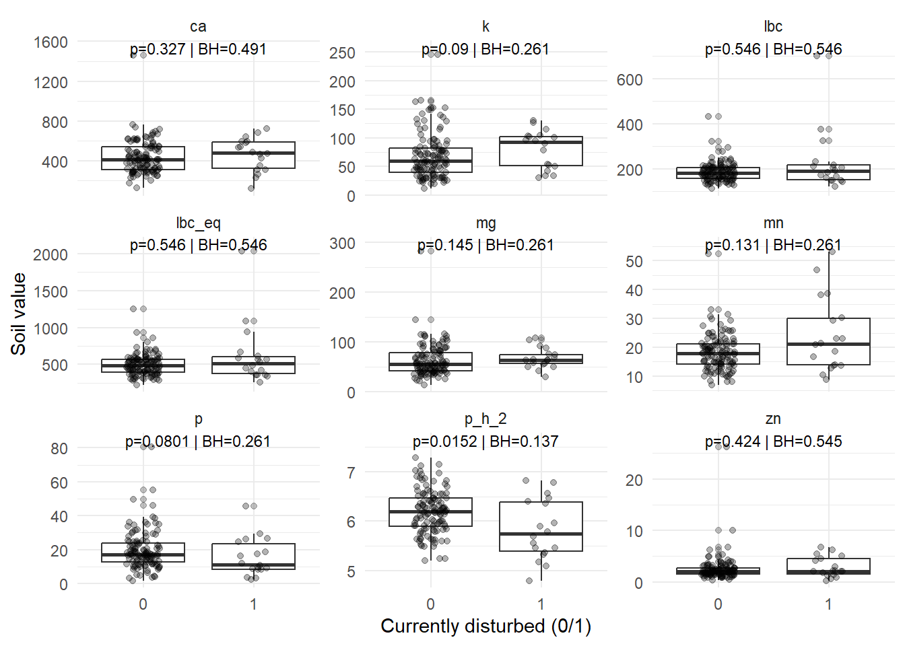
taxa_vars <- c("weed_total_abundance","weed_species_richness",
"weed_family_richness","dom_family_share")
df_long_taxa <- dat_fast %>%
mutate(dist_current = as.factor(dist_current)) %>%
pivot_longer(all_of(taxa_vars), names_to="taxa_var", values_to="value") %>%
mutate(value = as.numeric(value))
p_taxa <- df_long_taxa %>%
filter(!is.na(value), !is.na(dist_current)) %>%
group_by(taxa_var) %>%
summarise(
n0 = sum(dist_current == "0"),
n1 = sum(dist_current == "1"),
p_value = ifelse(n0 >= 2 & n1 >= 2,
suppressWarnings(wilcox.test(value ~ dist_current)$p.value),
NA_real_
),
y_pos = max(value, na.rm = TRUE) * 1.05,
.groups="drop"
) %>%
mutate(p_lab = ifelse(is.na(p_value), "p = NA",
paste0("Wilcoxon p = ", signif(p_value, 3))))
ggplot(df_long_taxa, aes(x = dist_current, y = value)) +
geom_boxplot(outlier.alpha = 0.3) +
geom_jitter(width = 0.15, alpha = 0.3) +
facet_wrap(~ taxa_var, scales = "free_y") +
geom_text(
data = p_taxa,
aes(x = 1.5, y = y_pos, label = p_lab),
inherit.aes = FALSE,
size = 3
) +
labs(x = "Currently disturbed (0/1)", y = "Taxa summary") +
theme_minimal()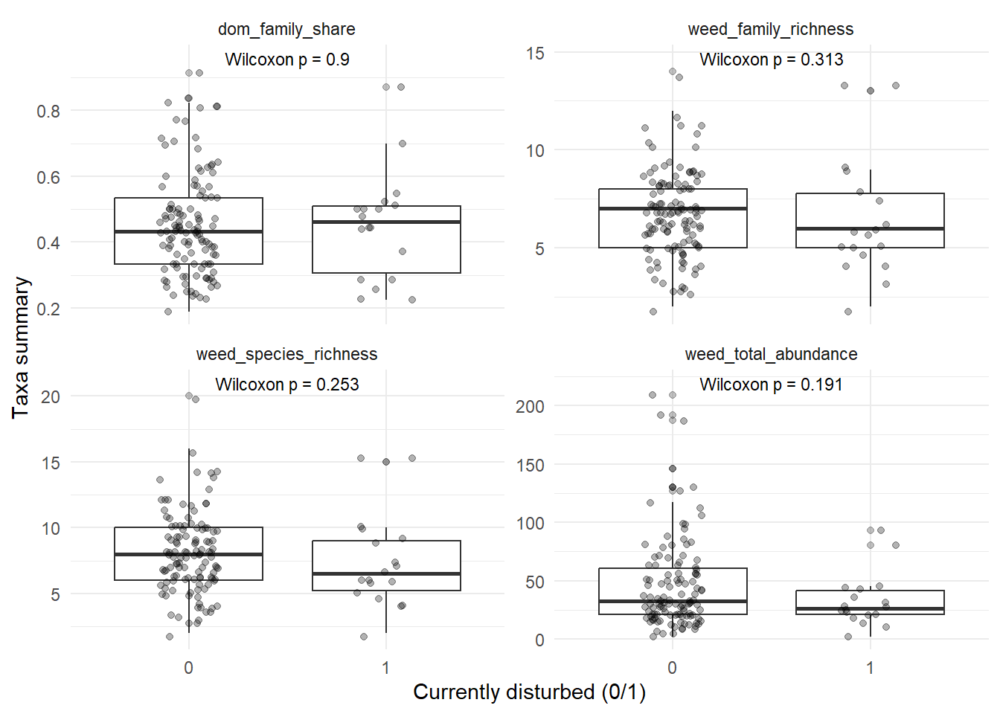
## counts of dominant family by disturbance
tab <- dat_fast %>%
filter(!is.na(dom_family), dom_family != "") %>%
count(dist_current, dom_family) %>%
tidyr::pivot_wider(names_from = dist_current, values_from = n, values_fill = 0)
mat <- as.matrix(tab[, -1])
rownames(mat) <- tab$dom_family
# Fisher (robust for small counts)
fisher.test(mat)
Fisher's Exact Test for Count Data
data: mat
p-value = 0.1009
alternative hypothesis: two.sided# If counts are all decent, chi-square is fine:
chisq.test(mat) # watch for the "approximation may be incorrect" warningWarning in stats::chisq.test(x, y, ...): Chi-squared approximation may be
incorrect
Pearson's Chi-squared test
data: mat
X-squared = 24.602, df = 14, p-value = 0.03871# family abundance per point
fam_point <- surface_sampling_weed %>%
transmute(
row_num = as.character(row_num),
family = str_squish(family),
weed_count = as.numeric(weed_count)
) %>%
filter(!is.na(family), family != "", !is.na(weed_count)) %>%
group_by(row_num, family) %>%
summarise(fam_abund = sum(weed_count, na.rm = TRUE), .groups="drop")
# join disturbance
fam_dist <- soil_dist %>%
transmute(row_num = as.character(row_num),
dist_current = as.factor(dist_current)) %>%
left_join(fam_point, by = "row_num") %>%
mutate(fam_abund = replace_na(fam_abund, 0))Warning in left_join(., fam_point, by = "row_num"): Detected an unexpected many-to-many relationship between `x` and `y`.
ℹ Row 1 of `x` matches multiple rows in `y`.
ℹ Row 1027 of `y` matches multiple rows in `x`.
ℹ If a many-to-many relationship is expected, set `relationship =
"many-to-many"` to silence this warning.# optional: keep only families present in >= N points (otherwise p-values are junk)
min_pts <- 10
keep_fam <- fam_dist %>%
group_by(family) %>%
summarise(n_pts = sum(fam_abund > 0), .groups="drop") %>%
filter(n_pts >= min_pts) %>%
pull(family)
fam_dist2 <- fam_dist %>% filter(family %in% keep_fam)
# p-values per family (Wilcoxon)
p_fam <- fam_dist2 %>%
group_by(family) %>%
summarise(
n0 = sum(dist_current == "0"),
n1 = sum(dist_current == "1"),
p_value = ifelse(n0 >= 2 & n1 >= 2,
suppressWarnings(wilcox.test(fam_abund ~ dist_current)$p.value),
NA_real_),
y_pos = max(fam_abund, na.rm=TRUE) * 1.05,
.groups="drop"
) %>%
mutate(
p_bh = p.adjust(p_value, method = "BH"), # optional
p_lab = ifelse(is.na(p_value), "p=NA",
paste0("p=", signif(p_value,3),
" | BH=", signif(p_bh,3)))
)
ggplot(fam_dist2, aes(x = dist_current, y = fam_abund)) +
geom_boxplot(outlier.alpha = 0.3) +
geom_jitter(width = 0.15, alpha = 0.25) +
facet_wrap(~ family, scales = "free_y") +
geom_text(data = p_fam,
aes(x = 1.5, y = y_pos, label = p_lab),
inherit.aes = FALSE, size = 3) +
labs(x = "Currently disturbed (0/1)", y = "Family abundance") +
theme_minimal()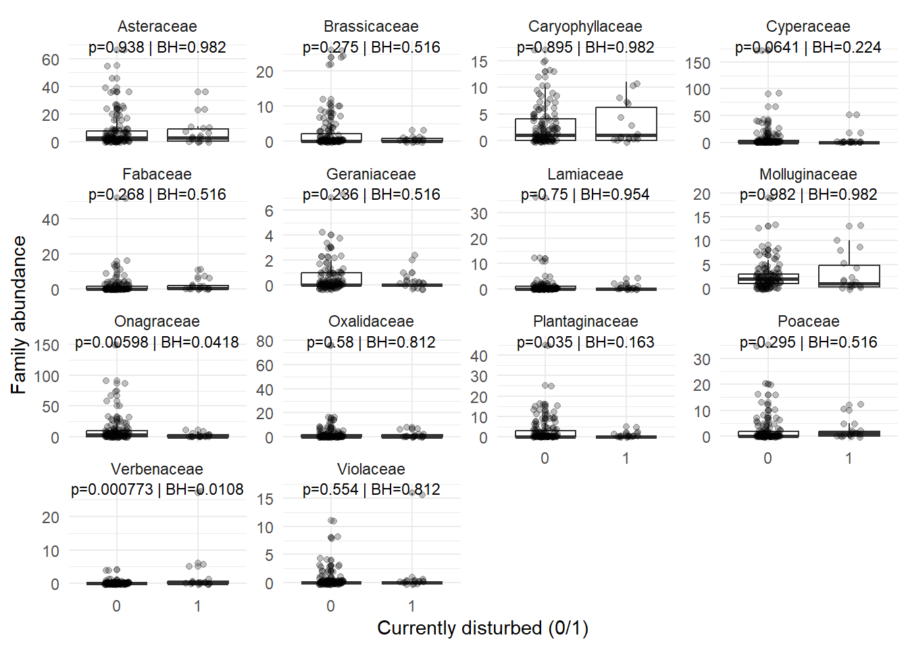
# 1) family abundance per point
fam_point <- surface_sampling_weed %>%
transmute(
row_num = as.character(row_num),
family = str_squish(family),
weed_count = as.numeric(weed_count)
) %>%
filter(!is.na(family), family != "", !is.na(weed_count)) %>%
group_by(row_num, family) %>%
summarise(fam_abund = sum(weed_count, na.rm = TRUE), .groups = "drop")
# 2) join distance to disturbance
fam_dist <- dat_fast %>%
transmute(
row_num = as.character(row_num),
dist_to_current_m = as.numeric(dist_to_current_m)
) %>%
left_join(fam_point, by = "row_num") %>%
mutate(fam_abund = replace_na(fam_abund, 0)) %>%
filter(!is.na(dist_to_current_m))Warning in left_join(., fam_point, by = "row_num"): Detected an unexpected many-to-many relationship between `x` and `y`.
ℹ Row 1 of `x` matches multiple rows in `y`.
ℹ Row 1027 of `y` matches multiple rows in `x`.
ℹ If a many-to-many relationship is expected, set `relationship =
"many-to-many"` to silence this warning.# 3) (recommended) keep only families present in enough points
min_pts <- 10
keep_fam <- fam_dist %>%
group_by(family) %>%
summarise(n_pts = sum(fam_abund > 0), .groups="drop") %>%
filter(n_pts >= min_pts) %>%
pull(family)
fam_dist2 <- fam_dist %>% filter(family %in% keep_fam)
# 4) plot
ggplot(fam_dist2, aes(x = dist_to_current_m, y = fam_abund)) +
geom_point(alpha = 0.35) +
geom_smooth(method = "loess", se = FALSE) +
facet_wrap(~ family, scales = "free_y") +
labs(x = "Distance to current disturbance (m)", y = "Family abundance") +
theme_minimal()`geom_smooth()` using formula = 'y ~ x'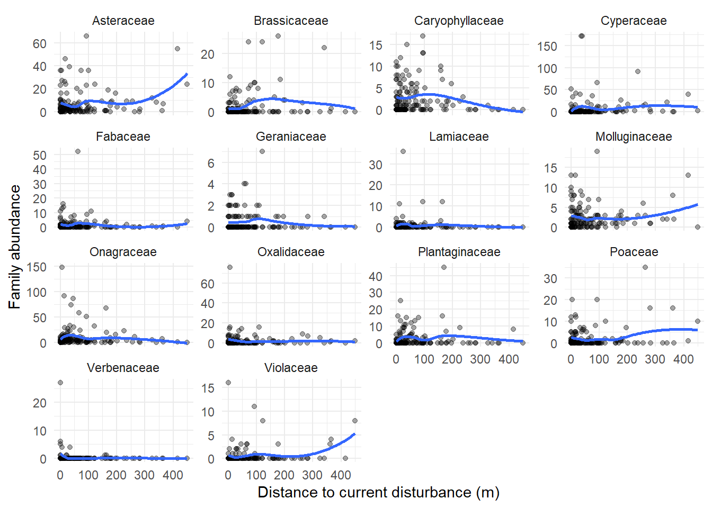
tab <- dat_fast %>%
filter(!is.na(dom_family)) %>%
count(dist_current, dom_family) %>%
pivot_wider(names_from = dist_current, values_from = n, values_fill = 0)
# dominant family x disturbance (0/1)
mat <- dat_fast %>%
filter(!is.na(dom_family), !is.na(dist_current)) %>%
count(dom_family, dist_current) %>%
tidyr::pivot_wider(names_from = dist_current, values_from = n, values_fill = 0) %>%
tibble::column_to_rownames("dom_family") %>%
as.matrix()
dim(mat)[1] 15 2mat[1:5, , drop = FALSE] 0 1
Asteraceae 25 3
Brassicaceae 9 0
Campanulaceae 1 0
Caryophyllaceae 12 3
Cyperaceae 9 1chisq <- chisq.test(mat)Warning in stats::chisq.test(x, y, ...): Chi-squared approximation may be
incorrectchisq$p.value[1] 0.03870593chisq$expected[1:5, , drop = FALSE] # peek at expected counts 0 1
Asteraceae 24.2941176 3.7058824
Brassicaceae 7.8088235 1.1911765
Campanulaceae 0.8676471 0.1323529
Caryophyllaceae 13.0147059 1.9852941
Cyperaceae 8.6764706 1.3235294# standardized residuals (always coerce to matrix)
resid_mat <- as.matrix(chisq$stdres)
# top contributors (big absolute residuals)
top_resid <- as.data.frame(as.table(resid_mat)) %>%
mutate(abs_resid = abs(Freq)) %>%
arrange(desc(abs_resid))
head(top_resid, 15) Var1 Var2 Freq abs_resid
1 Juncaceae 0 -2.5698473 2.5698473
2 Verbenaceae 0 -2.5698473 2.5698473
3 Violaceae 0 -2.5698473 2.5698473
4 Juncaceae 1 2.5698473 2.5698473
5 Verbenaceae 1 2.5698473 2.5698473
6 Violaceae 1 2.5698473 2.5698473
7 Brassicaceae 0 1.2125066 1.2125066
8 Brassicaceae 1 -1.2125066 1.2125066
9 Onagraceae 0 1.0121670 1.0121670
10 Onagraceae 1 -1.0121670 1.0121670
11 Plantaginaceae 0 0.8898444 0.8898444
12 Plantaginaceae 1 -0.8898444 0.8898444
13 Poaceae 1 0.8233069 0.8233069
14 Poaceae 0 -0.8233069 0.8233069
15 Caryophyllaceae 0 -0.8196585 0.8196585chisq_mc <- chisq.test(mat, simulate.p.value = TRUE, B = 9999)
chisq_mc$p.value[1] 0.0547min_n <- 3 # threshold for rare dominant families
dat_dom <- dat_fast %>%
filter(!is.na(dom_family), !is.na(dist_current)) %>%
group_by(dom_family) %>%
mutate(tot = n()) %>%
ungroup() %>%
mutate(dom_family2 = if_else(tot < min_n, "Other", dom_family))
mat2 <- dat_dom %>%
count(dom_family2, dist_current) %>%
pivot_wider(names_from = dist_current, values_from = n, values_fill = 0) %>%
tibble::column_to_rownames("dom_family2") %>%
as.matrix()
chisq2 <- chisq.test(mat2)Warning in stats::chisq.test(x, y, ...): Chi-squared approximation may be
incorrectchisq2$p.value[1] 0.166158# long weed table with counts
weed_long <- surface_sampling_weed %>%
transmute(
row_num = as.character(row_num),
family = str_squish(family),
weed_count = as.numeric(weed_count)
) %>%
filter(!is.na(weed_count), !is.na(family))
# point x family abundance
fam_wide <- weed_long %>%
group_by(row_num, family) %>%
summarise(abund = sum(weed_count, na.rm = TRUE), .groups = "drop") %>%
pivot_wider(names_from = family, values_from = abund, values_fill = 0)
# community matrix (rows = points, cols = families)
comm <- fam_wide %>%
column_to_rownames("row_num") %>%
as.matrix()
# remove points with zero total weeds (Bray-Curtis doesn't like all-zero rows)
keep_rows <- rowSums(comm) > 0
comm <- comm[keep_rows, , drop = FALSE]
# convert to relative abundance (recommended)
comm_rel <- decostand(comm, method = "total")
meta <- soil_dist %>%
transmute(
row_num = as.character(row_num),
dist_current = factor(dist_current), # 0/1 as factor for grouping
dist_to_current_m = as.numeric(dist_to_current_m)
) %>%
filter(row_num %in% rownames(comm_rel)) %>%
distinct(row_num, .keep_all = TRUE) %>%
arrange(match(row_num, rownames(comm_rel)))
# align rows exactly (important!)
comm_rel <- comm_rel[meta$row_num, , drop = FALSE]
stopifnot(all(meta$row_num == rownames(comm_rel)))
set.seed(1)
adon_bin <- adonis2(comm_rel ~ dist_current, data = meta, method = "bray", permutations = 9999)
adon_binPermutation test for adonis under reduced model
Permutation: free
Number of permutations: 9999
adonis2(formula = comm_rel ~ dist_current, data = meta, permutations = 9999, method = "bray")
Df SumOfSqs R2 F Pr(>F)
Model 1 0.611 0.01745 2.3618 0.0197 *
Residual 133 34.428 0.98255
Total 134 35.040 1.00000
---
Signif. codes: 0 '***' 0.001 '**' 0.01 '*' 0.05 '.' 0.1 ' ' 1set.seed(1)
adon_dist <- adonis2(comm_rel ~ dist_to_current_m, data = meta, method = "bray", permutations = 9999)
adon_distPermutation test for adonis under reduced model
Permutation: free
Number of permutations: 9999
adonis2(formula = comm_rel ~ dist_to_current_m, data = meta, permutations = 9999, method = "bray")
Df SumOfSqs R2 F Pr(>F)
Model 1 0.700 0.01999 2.7122 0.009 **
Residual 133 34.339 0.98001
Total 134 35.040 1.00000
---
Signif. codes: 0 '***' 0.001 '**' 0.01 '*' 0.05 '.' 0.1 ' ' 1set.seed(1)
adon_both <- adonis2(comm_rel ~ dist_current + dist_to_current_m, data = meta, method = "bray", permutations = 9999)
adon_bothPermutation test for adonis under reduced model
Permutation: free
Number of permutations: 9999
adonis2(formula = comm_rel ~ dist_current + dist_to_current_m, data = meta, permutations = 9999, method = "bray")
Df SumOfSqs R2 F Pr(>F)
Model 2 1.419 0.0405 2.7858 0.0011 **
Residual 132 33.621 0.9595
Total 134 35.040 1.0000
---
Signif. codes: 0 '***' 0.001 '**' 0.01 '*' 0.05 '.' 0.1 ' ' 1bray <- vegdist(comm_rel, method = "bray")
bd <- betadisper(bray, meta$dist_current)
anova(bd) # test of dispersion differencesAnalysis of Variance Table
Response: Distances
Df Sum Sq Mean Sq F value Pr(>F)
Groups 1 0.01992 0.0199249 2.2221 0.1384
Residuals 133 1.19257 0.0089667 permutest(bd, permutations = 9999)
Permutation test for homogeneity of multivariate dispersions
Permutation: free
Number of permutations: 9999
Response: Distances
Df Sum Sq Mean Sq F N.Perm Pr(>F)
Groups 1 0.01992 0.0199249 2.2221 9999 0.137
Residuals 133 1.19257 0.0089667 # quick visualization
plot(bd)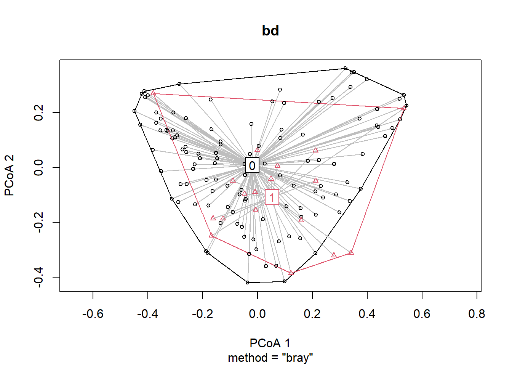
boxplot(bd, ylab = "Distance to group centroid (Bray-Curtis)")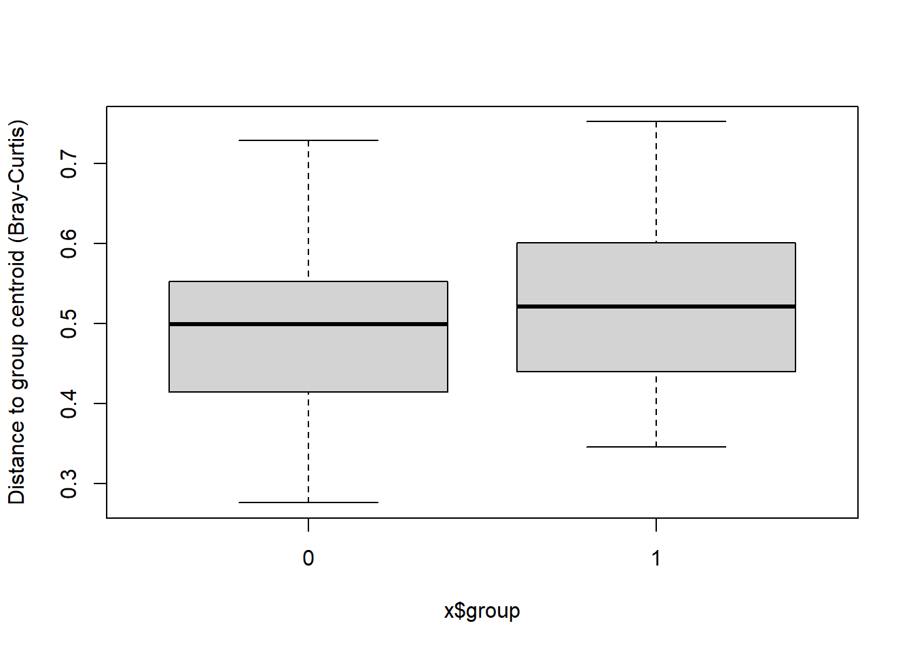
ord <- metaMDS(comm_rel, distance = "bray", k = 2, trymax = 50)Run 0 stress 0.2516361
Run 1 stress 0.2752304
Run 2 stress 0.2521707
Run 3 stress 0.2613889
Run 4 stress 0.2633686
Run 5 stress 0.2797996
Run 6 stress 0.2639133
Run 7 stress 0.2626951
Run 8 stress 0.256334
Run 9 stress 0.2586617
Run 10 stress 0.2672824
Run 11 stress 0.2636024
Run 12 stress 0.2654409
Run 13 stress 0.2702272
Run 14 stress 0.269544
Run 15 stress 0.2637741
Run 16 stress 0.2528242
Run 17 stress 0.2598331
Run 18 stress 0.2591699
Run 19 stress 0.2652461
Run 20 stress 0.2735516
Run 21 stress 0.2541053
Run 22 stress 0.2767394
Run 23 stress 0.2679185
Run 24 stress 0.2697835
Run 25 stress 0.2805311
Run 26 stress 0.2678759
Run 27 stress 0.2738246
Run 28 stress 0.2487838
... New best solution
... Procrustes: rmse 0.04815281 max resid 0.3281775
Run 29 stress 0.269326
Run 30 stress 0.2739631
Run 31 stress 0.2699372
Run 32 stress 0.2674893
Run 33 stress 0.2685194
Run 34 stress 0.2559288
Run 35 stress 0.2539364
Run 36 stress 0.2597146
Run 37 stress 0.2721965
Run 38 stress 0.2666252
Run 39 stress 0.2575483
Run 40 stress 0.2632682
Run 41 stress 0.2660986
Run 42 stress 0.27553
Run 43 stress 0.2674107
Run 44 stress 0.2592046
Run 45 stress 0.2524396
Run 46 stress 0.2710935
Run 47 stress 0.2659774
Run 48 stress 0.260738
Run 49 stress 0.2736406
Run 50 stress 0.255992
*** Best solution was not repeated -- monoMDS stopping criteria:
49: stress ratio > sratmax
1: scale factor of the gradient < sfgrminplot(ord, type = "n")
points(ord, display = "sites",
pch = 19,
col = ifelse(meta$dist_current == 1, "red", "blue"))
legend("topright", legend = c("Not disturbed (0)", "Disturbed (1)"),
col = c("blue", "red"), pch = 19, bty = "n")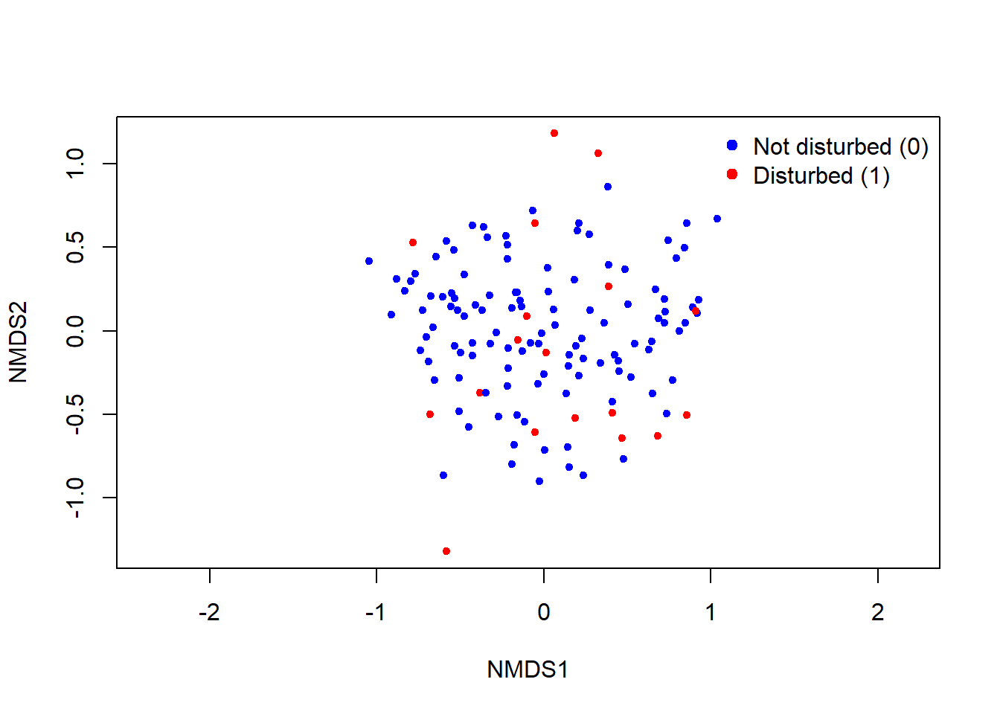
# for a more focused test, subset to just the undisturbed points and see if distance to disturbance still matters
meta2 <- meta %>% filter(dist_current == 0)
comm2 <- comm_rel[meta2$row_num, , drop = FALSE]
set.seed(1)
adon_outside <- adonis2(comm2 ~ dist_to_current_m, data = meta2, method="bray", permutations=9999)
adon_outside Permutation test for adonis under reduced model
Permutation: free
Number of permutations: 9999
adonis2(formula = comm2 ~ dist_to_current_m, data = meta2, permutations = 9999, method = "bray")
Df SumOfSqs R2 F Pr(>F)
Model 1 0.8077 0.02765 3.2697 0.0038 **
Residual 115 28.4080 0.97235
Total 116 29.2157 1.00000
---
Signif. codes: 0 '***' 0.001 '**' 0.01 '*' 0.05 '.' 0.1 ' ' 1# even among undisturbed points, distance to disturbance has a significant effect on community composition (p = 0.0038)
# “Distance to disturbance remained a significant predictor of weed family composition even when analyses were restricted to undisturbed sampling points (PERMANOVA, Bray–Curtis, R² = 0.0277, p = 0.0038), indicating that compositional differences extend beyond disturbance polygons and are consistent with a proximity (edge) effect.”set.seed(1234)
soil_vars <- c("lbc","lbc_eq","p_h_2","ca","k","mg","mn","p","zn")
# long weeds (you already have surface_sampling_weed)
weed_long2 <- surface_sampling_weed %>%
transmute(
row_num = as.character(row_num),
family = str_squish(family),
genus = str_squish(genus),
weed_count = as.numeric(weed_count)
) %>%
filter(!is.na(weed_count))
# point-level soil table
soil_point <- surface_sampling %>%
transmute(row_num = as.character(row_num),
across(all_of(soil_vars), as.numeric))
# family abundance per point
fam_y <- weed_long2 %>%
group_by(row_num, family) %>%
summarise(y = sum(weed_count, na.rm = TRUE), .groups="drop") %>%
filter(!is.na(family), family != "")
# genus abundance per point
gen_y <- weed_long2 %>%
group_by(row_num, genus) %>%
summarise(y = sum(weed_count, na.rm = TRUE), .groups="drop") %>%
filter(!is.na(genus), genus != "")
min_points <- 10 # only model taxa present in >=10 points
num_trees <- 500 # bump to 1000 later if you want
fit_rf_by_taxon <- function(y_tbl, taxon_col, soil_df) {
taxon_sym <- rlang::sym(taxon_col)
eligible <- y_tbl %>%
group_by(!!taxon_sym) %>%
summarise(n_pts = sum(y > 0), .groups="drop") %>%
filter(n_pts >= min_points) %>%
pull(!!taxon_sym)
y_tbl %>%
filter((!!taxon_sym) %in% eligible) %>%
group_split(!!taxon_sym) %>%
purrr::map(function(d) {
taxon_name <- d[[taxon_col]][1]
dat <- soil_df %>%
left_join(d %>% select(row_num, y), by = "row_num") %>%
mutate(y = replace_na(y, 0))
# ranger regression RF
mod <- ranger::ranger(
y ~ .,
data = dat %>% select(-row_num),
num.trees = num_trees,
importance = "permutation",
respect.unordered.factors = "order",
seed = 1
)
imp <- mod$variable.importance
tibble(
taxon = taxon_name,
soil_variable = names(imp),
importance = as.numeric(imp)
)
}) %>%
bind_rows()
}
varimp_family <- fit_rf_by_taxon(fam_y, "family", soil_point)
varimp_genus <- fit_rf_by_taxon(gen_y, "genus", soil_point)
soil_labels <- c(
lbc = "LBC ",
lbc_eq = "LBCeq ",
p_h_2 = "pH",
ca = "Ca ",
k = "K ",
mg = "Mg ",
mn = "Mn ",
p = "P ",
zn = "Zn "
)
soil_vars <- names(soil_labels) # keeps order
plot_varimp_heat_raw <- function(varimp_df, title_txt, digits = 3) {
dfp <- varimp_df %>%
mutate(
soil_variable = factor(soil_variable, levels = soil_vars),
soil_label = factor(soil_labels[as.character(soil_variable)], levels = soil_labels),
label = if_else(is.na(importance), "", format(round(importance, digits), nsmall = digits)),
label_col = if_else(!is.na(importance) & importance < 35, "white", "black")
) %>%
group_by(taxon) %>%
mutate(taxon_mean = mean(abs(importance), na.rm = TRUE)) %>% # order by overall signal
ungroup() %>%
mutate(taxon = reorder(taxon, taxon_mean))
ggplot(dfp, aes(x = soil_label, y = taxon, fill = importance)) +
geom_tile(color = "white") +
geom_text(aes(label = label, color = label_col), size = 2.8) +
scale_color_identity() +
scale_fill_viridis_c(option = "magma", name = "Permutation\nimportance") +
labs(
title = title_txt,
subtitle = "Raw (signed) permutation importance from ranger (all cells labeled).",
x = "Surface soil property",
y = NULL
) +
theme_minimal(base_size = 10) +
theme(
panel.grid = element_blank(),
axis.text.x = element_text(angle = 45, hjust = 1),
plot.title = element_text(face = "bold")
)
}
p_fam_raw <- plot_varimp_heat_raw(varimp_family, "Soil drivers of weed FAMILY abundance (raw importance)", digits = 3)
p_gen_raw <- plot_varimp_heat_raw(varimp_genus, "Soil drivers of weed GENUS abundance (raw importance)", digits = 3)
p_fam_raw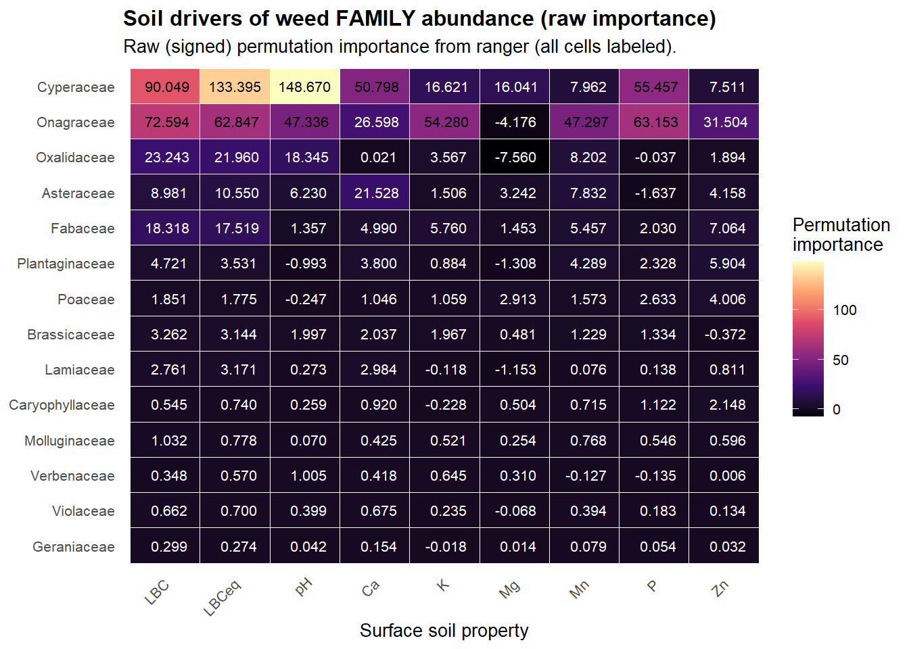
p_gen_raw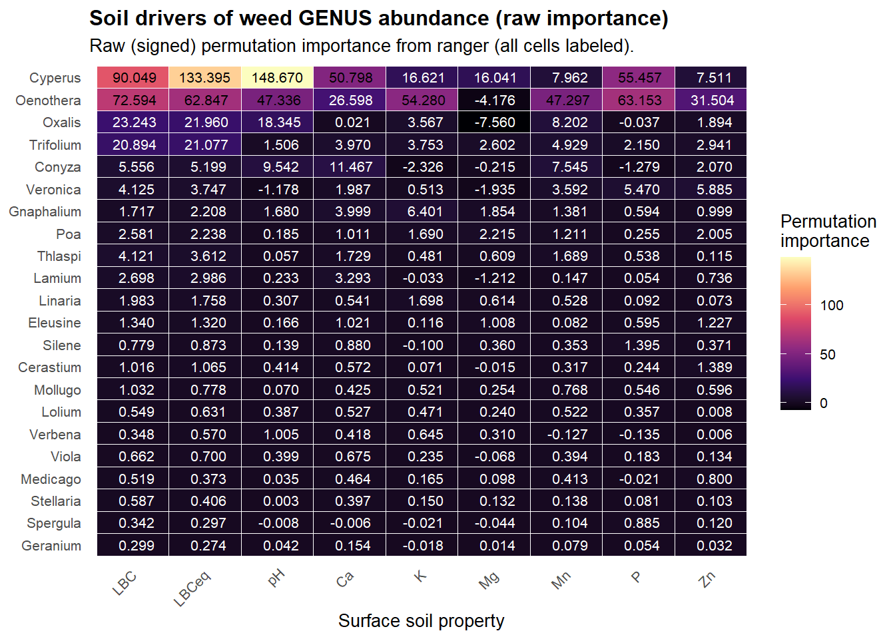
make_taxon_soil_corplot <- function(surface_sampling_weed, surface_sampling,
taxon_col = c("genus","family"),
title_txt = NULL,
min_pts = 8,
digits = 2) {
taxon_col <- match.arg(taxon_col)
# 1) point-level taxon abundance wide
tax_wide <- surface_sampling_weed %>%
transmute(
row_num = as.character(row_num),
taxon = str_squish(.data[[taxon_col]]),
weed_count = as.numeric(weed_count)
) %>%
filter(!is.na(taxon), taxon != "", !is.na(weed_count)) %>%
group_by(row_num, taxon) %>%
summarise(abund = sum(weed_count, na.rm = TRUE), .groups = "drop") %>%
pivot_wider(names_from = taxon, values_from = abund, values_fill = 0)
# 2) soil table
soil_point <- surface_sampling %>%
transmute(row_num = as.character(row_num),
across(all_of(soil_vars), as.numeric))
dat <- soil_point %>%
inner_join(tax_wide, by = "row_num")
taxon_cols <- setdiff(names(dat), c("row_num", soil_vars))
# 3) restrict to taxa present in >= min_pts points
n_pts <- dat %>%
summarise(across(all_of(taxon_cols), ~sum(.x > 0, na.rm = TRUE))) %>%
pivot_longer(everything(), names_to = "taxon", values_to = "n_pts")
keep_taxa <- n_pts %>%
filter(n_pts >= min_pts) %>%
pull(taxon)
if (length(keep_taxa) == 0) stop("No taxa meet min_pts threshold. Lower min_pts.")
# 4) compute Spearman rho for each (taxon, soil_var)
cor_long <- expand_grid(taxon = keep_taxa, soil_variable = soil_vars) %>%
rowwise() %>%
mutate(
rho = suppressWarnings(
cor(dat[[taxon]], dat[[soil_variable]],
method = "spearman", use = "pairwise.complete.obs")
)
) %>%
ungroup()
# 5) sort taxa by mean absolute correlation strength (highest -> lowest)
tax_order <- cor_long %>%
group_by(taxon) %>%
summarise(mean_abs_rho = mean(abs(rho), na.rm = TRUE), .groups = "drop") %>%
arrange(desc(mean_abs_rho)) %>%
pull(taxon)
# 6) set color limits to observed min/max rho (after filtering)
lims <- range(cor_long$rho, na.rm = TRUE)
# 7) plot
if (is.null(title_txt)) {
title_txt <- paste0(str_to_title(taxon_col), " abundance vs soil nutrients")
}
cor_long %>%
mutate(
soil_label = factor(soil_labels[soil_variable], levels = soil_labels),
taxon = factor(taxon, levels = tax_order),
label = if_else(is.na(rho), "", sprintf(paste0("%.", digits, "f"), rho)),
label_col = if_else(!is.na(rho) & rho < 0, "white", "black"))%>%
ggplot(aes(x = soil_label, y = taxon, fill = rho)) +
geom_tile(color = "white") +
geom_text(aes(label = label, color = label_col), size = 2.8) +
scale_color_identity() +
scale_fill_viridis_c(option = "magma", name = "Spearman\nρ", limits = lims) +
labs(
title = title_txt,
subtitle = paste0(
"Filtered to taxa present in ≥", min_pts, " points. ",
"Color scale set to observed min/max ρ."
),
x = "Surface soil property",
y = str_to_title(taxon_col)
) +
theme_minimal(base_size = 10) +
theme(
panel.grid = element_blank(),
axis.text.x = element_text(angle = 45, hjust = 1),
plot.title = element_text(face = "bold")
)
}
p_cor_gen <- make_taxon_soil_corplot(
surface_sampling_weed = surface_sampling_weed,
surface_sampling = surface_sampling,
taxon_col = "genus",
title_txt = "Genus abundance vs soil nutrients (Spearman ρ)",
min_pts = 8,
digits = 2
)
p_cor_gen
p_cor_fam <- make_taxon_soil_corplot(
surface_sampling_weed = surface_sampling_weed,
surface_sampling = surface_sampling,
taxon_col = "family",
title_txt = "Family abundance vs soil nutrients (Spearman ρ)",
min_pts = 8,
digits = 2
)
p_cor_fam#FDR correction:
make_taxon_soil_corplot_fdr <- function(surface_sampling_weed, surface_sampling,
soil_vars, soil_labels,
taxon_col = c("genus","family"),
min_pts = 8,
digits = 2,
alpha = 0.10,
show = c("fdr_star","fdr_only","all")) {
show <- match.arg(show)
taxon_col <- match.arg(taxon_col)
# 1) point-level taxon abundance wide
tax_wide <- surface_sampling_weed %>%
transmute(
row_num = stringr::str_squish(as.character(row_num)),
taxon = stringr::str_squish(.data[[taxon_col]]),
weed_count = readr::parse_number(as.character(weed_count))
) %>%
filter(!is.na(taxon), taxon != "", !is.na(weed_count)) %>%
group_by(row_num, taxon) %>%
summarise(abund = sum(weed_count, na.rm = TRUE), .groups = "drop") %>%
tidyr::pivot_wider(names_from = taxon, values_from = abund, values_fill = 0)
# 2) soil table
soil_point <- surface_sampling %>%
transmute(
row_num = stringr::str_squish(as.character(row_num)),
across(all_of(soil_vars), ~ readr::parse_number(as.character(.x)))
)
dat <- dplyr::inner_join(soil_point, tax_wide, by = "row_num")
if (nrow(dat) == 0) stop("Join produced 0 rows. Check row_num formatting.")
taxon_cols <- setdiff(names(dat), c("row_num", soil_vars))
# keep taxa present in >= min_pts points
keep_taxa <- dat %>%
summarise(across(all_of(taxon_cols), ~sum(.x > 0, na.rm = TRUE))) %>%
pivot_longer(everything(), names_to = "taxon", values_to = "n_pts") %>%
filter(n_pts >= min_pts) %>%
pull(taxon)
if (length(keep_taxa) == 0) stop("No taxa meet min_pts threshold. Lower min_pts.")
# Spearman-safe helper
safe_spearman <- function(x, y) {
ok <- is.finite(x) & is.finite(y)
x <- x[ok]; y <- y[ok]
if (length(x) < 3) return(c(rho = NA_real_, p = NA_real_))
if (length(unique(x)) < 2 || length(unique(y)) < 2) return(c(rho = NA_real_, p = NA_real_))
ct <- suppressWarnings(stats::cor.test(x, y, method = "spearman", exact = FALSE))
c(rho = unname(ct$estimate), p = ct$p.value)
}
# compute rho + p
cor_long <- tidyr::expand_grid(taxon = keep_taxa, soil_variable = soil_vars) %>%
rowwise() %>%
mutate(
tmp = list(safe_spearman(dat[[taxon]], dat[[soil_variable]])),
rho = tmp[[1]]["rho"],
p = tmp[[1]]["p"]
) %>%
ungroup() %>%
mutate(
p_fdr = p.adjust(p, method = "BH"),
sig_fdr = !is.na(p_fdr) & p_fdr < alpha
)
# order taxa by mean |rho|
tax_order <- cor_long %>%
group_by(taxon) %>%
summarise(mean_abs_rho = mean(abs(rho), na.rm = TRUE), .groups = "drop") %>%
arrange(desc(mean_abs_rho)) %>%
pull(taxon)
# color limits to observed min/max rho (ignore NA)
lims <- range(cor_long$rho, na.rm = TRUE)
# build plot table
plot_df <- cor_long %>%
mutate(
soil_label = factor(soil_labels[soil_variable], levels = soil_labels),
taxon = factor(taxon, levels = tax_order),
lab = if_else(is.na(rho), "", sprintf(paste0("%.", digits, "f"), rho)),
lab = if (show == "fdr_star") if_else(sig_fdr, paste0(lab, "*"), lab) else lab,
lab = if (show == "fdr_only") if_else(sig_fdr, lab, "") else lab,
label_col = if_else(!is.na(rho) & rho < 0, "white", "black")
)
p <- ggplot(plot_df, aes(x = soil_label, y = taxon, fill = rho)) +
geom_tile(color = "white") +
geom_text(aes(label = lab, color = label_col), size = 2.8) +
scale_color_identity() +
scale_fill_viridis_c(option = "magma", name = "Spearman\nρ", limits = lims) +
labs(
title = paste0(stringr::str_to_title(taxon_col), " abundance vs soil nutrients (Spearman ρ)"),
subtitle = paste0(
"FDR (BH) α=", alpha, ". Filtered to taxa present in ≥", min_pts, " points. ",
if (show == "fdr_star") "* = FDR-significant." else if (show == "fdr_only") "Labels shown only if FDR-significant." else ""
),
x = "Surface soil property",
y = stringr::str_to_title(taxon_col)
) +
theme_minimal(base_size = 10) +
theme(
panel.grid = element_blank(),
axis.text.x = element_text(angle = 45, hjust = 1),
plot.title = element_text(face = "bold")
)
list(plot = p, table = cor_long)
}
res_gen <- make_taxon_soil_corplot_fdr(surface_sampling_weed, surface_sampling,
soil_vars, soil_labels,
taxon_col="genus", min_pts=8, alpha=0.05, show="fdr_star")
res_gen$plot
res_fam <- make_taxon_soil_corplot_fdr(surface_sampling_weed, surface_sampling,
soil_vars, soil_labels,
taxon_col="family", min_pts=8, alpha=0.05, show="fdr_star")
res_fam$plot
#“no associations survived FDR at 0.05; patterns interpreted descriptively.”# pick the index columns you actually want
idx_cols <- c(
"simpsons_diversity_index",
"shannon_weiner_diversity_index",
"pielous_evenness_index",
"berger_parker_dominance_index"
)
dist_cols <- c("dist_current", "dist_to_current_m")
dat_idx <- soil_dist %>%
mutate(row_num = as.character(row_num)) %>%
select(row_num, any_of(dist_cols)) %>%
left_join(
surface_sampling_idx %>%
mutate(row_num = as.character(row_num)) %>%
select(row_num, any_of(idx_cols)),
by = "row_num"
) %>%
mutate(across(all_of(c(dist_cols, idx_cols)), ~ suppressWarnings(as.numeric(.x))))
cor_mat <- cor(
dat_idx %>% select(all_of(c(dist_cols, idx_cols))),
use = "pairwise.complete.obs",
method = "spearman"
)
cor_mat
cor_block <- cor_mat[dist_cols, idx_cols, drop = FALSE]
cor_block
library(corrplot)
corrplot::corrplot(cor_block, is.corr = TRUE, method = "color",
tl.cex = 0.9, mar = c(0,0,1,0))